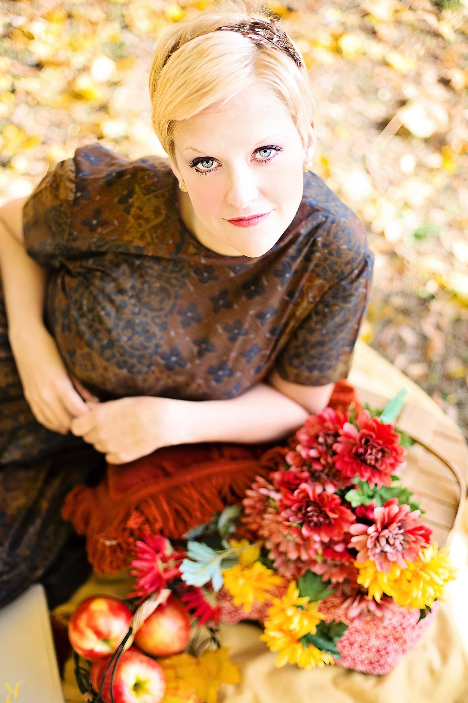
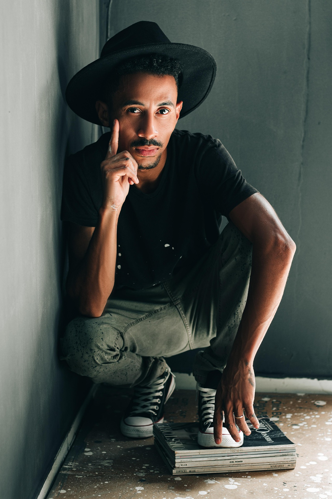
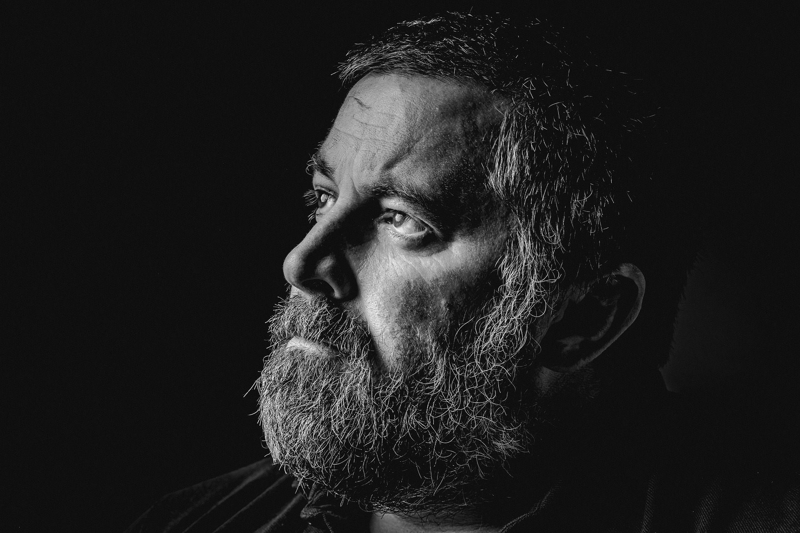
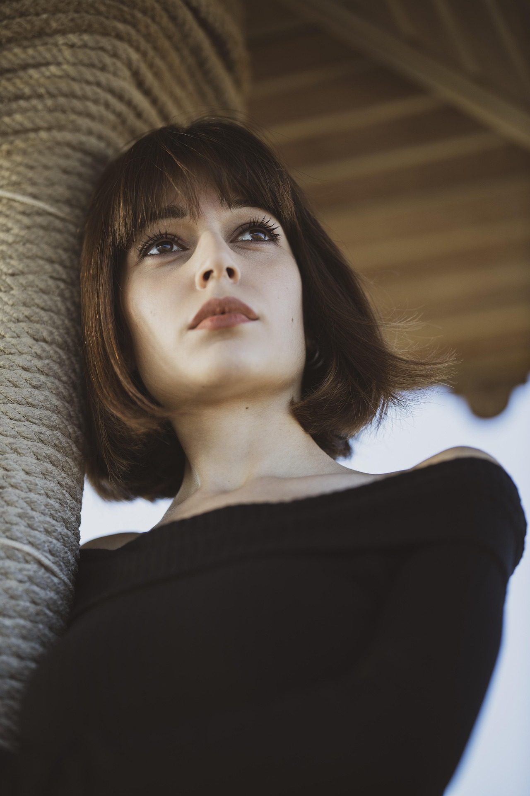
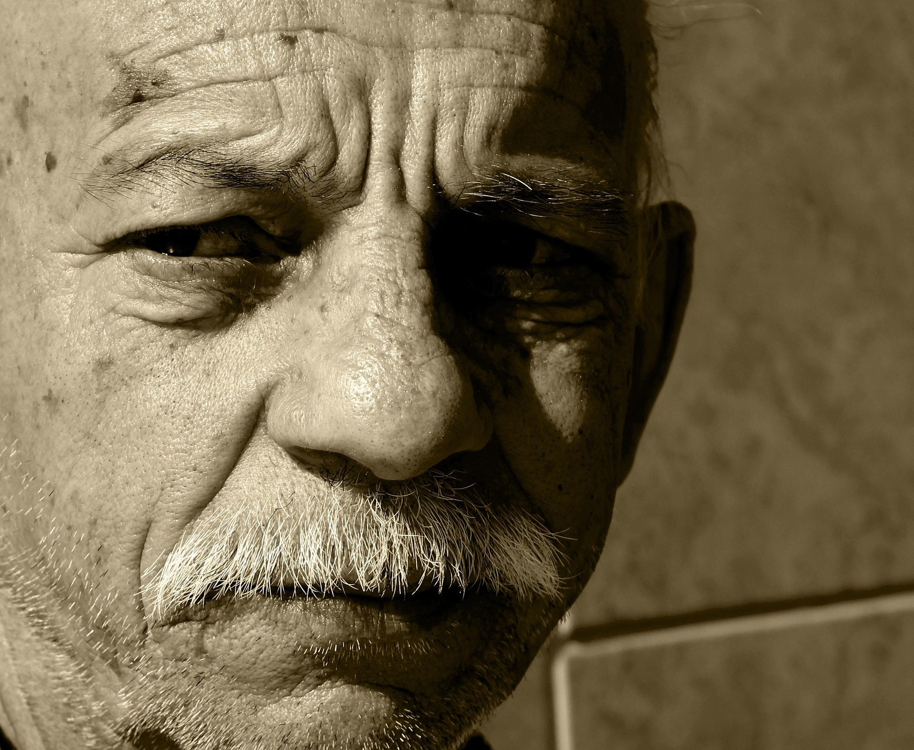

María Casals
Ceramista
Más de 25 años perfeccionando la técnica del gres. Sus obras se exponen en galerías de Madrid, Almería y Lisboa.
Cerámica
Jornadas de Artesanía 2026
Descubre a los artesanos y artesanas que compartirán su conocimiento y pasión en las jornadas. Expertos de todo el territorio con décadas de experiencia en sus disciplinas.

Ceramista
Más de 25 años perfeccionando la técnica del gres. Sus obras se exponen en galerías de Madrid, Almería y Lisboa.

Ebanista
Formado en la Escuela de Artes y Oficios de Almería, especialista en mueble tradicional catalán y restauración de piezas antiguas.

Tejedora
Recupera técnicas ancestrales de tejido a telar con fibras naturales y tintes vegetales. Fundadora del colectivo TeixinArt.

Joyero artesanal
Orfebre con taller en el barrio del Born. Combina técnicas tradicionales de filigrana con diseño contemporáneo.

Vidriería artística
Especialista en vidrieras emplomadas y fusing. Ha restaurado vidrieras modernistas en edificios catalogados de toda Cataluña.

Encuadernador
Maestro encuadernador con más de 30 años de oficio. Conserva y enseña las técnicas tradicionales de encuadernación artesanal.